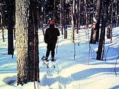

Climate
Landscape
Soil
Vegetation
Wildlife
Human Use
|
 |
Climate:
| Total annual precipitation (mm) |
262 |
| Annual snowfall (cm) |
168 |
| Water deficit (mm) |
--- |
| Mean July temperature (C) |
+15.6 |
| Mean January temperature (C) |
-28.5 |
The climate is humid and very cold. The long cold winters give
way to short cool summers and a short growing season.
| |
Landscape:
The landscape is rugged and ice scoured with Precambrian Shield
rock outcrops. Ridges are common throughout the region, as are
small to medium sized lakes.
|
Soil:

Most of the soils on top of the Precambrian
Shield are coarse textured forest soils. Organic soils (made up
of plants and animals that are, or once were, alive) occur in
depressions and are subject to permafrost (shown left).
|
Vegetation:
Species diversity is low as a result of harsh climatic conditions.
Stands of black spruce forest with lichen and moss ground cover
between the trees are typical. Mature trees in this region are
small and widely spaced. Jack pine, the second most prevalent
tree species, occupies sandy areas. White spruce, balsam
poplar, trembling aspen and white birch are
also present in this area. Peat moss, Labrador tea and small bog
cranberry grow in organic soils. This region has a few plants
that only occur here, as well as some arctic plants. Forest
fires greatly influence the vegetation.
|
Wildlife:

Black bear and moose are present, with barren ground caribou
migrating south from the Territories in winter. The arctic fox
is rare but does accompany the caribou onto its winter range.
Red fox, lynx, snowshoe hare, muskrat, wolf, marten, wolverine,
and red squirrel occur in low numbers. Spruce grouse, osprey and
waterfowl are characteristic of the region. The fox sparrow, ruby-crowned
kinglet, common loon and herring gull are typical of the area.
The surf scooter, mew gull, arctic tern and least sandpiper only
use this region for nesting. (Indicator species moose and hare)
|
Human Use:

The main activities of residents are trapping, hunting and prospecting.
Very little commercial or recreational fishing occurs. There are
no roads.
|
|
|